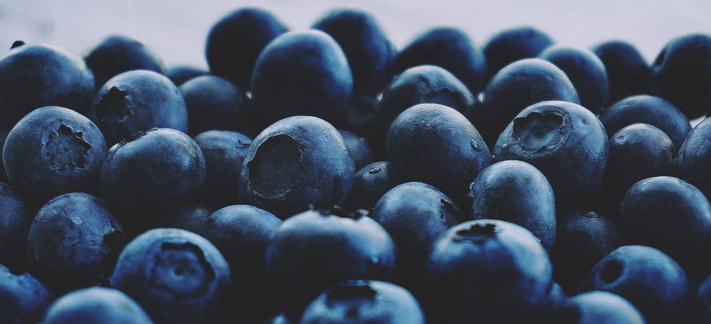
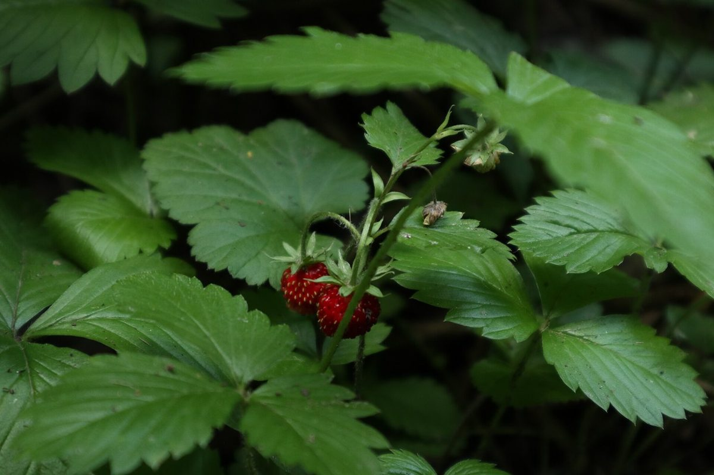

PÂTISSERIE / 新潟市東区太平
la maison de eF
ガレージを改装した小さなお店の、ショーケースいっぱいのタルト。旬のフルーツをのせて、焼菓子を並べる「小さな家」のような店です。
InstagramTARTES ET GÂTEAUX
タルトと焼菓子
取材記事によると、お店の主役は旬のフルーツをのせたタルトで、カヌレやフィナンシェなどの焼菓子も並びます。ここで紹介する写真は、お店の実際の商品ではなく、雰囲気を伝えるイメージです。

旬のフルーツのタルト(イメージ)
季節の果実を主役にしたお菓子。実際の品ぞろえは準備中です。

ティラミスのタルト(イメージ)
記事で紹介された一品。価格は準備中。

焼菓子(イメージ)
カヌレ・フィナンシェなど。詳細は準備中。

ケーキ(イメージ)
記事では、いちごのショートケーキも紹介されています。
営業時間・定休日・価格・ご予約: 準備中(詳しくは店舗にご確認ください)



VOICES
口コミ(イメージ例)
以下は制作側が作った想像のイメージ例です。実在のお客様の声ではありません。
フルーツがたっぷりのったタルトを、ショーケースの前でゆっくり選ぶ時間が楽しいです。
焼菓子は手みやげにしやすく、小さな箱に詰めてもらうと気持ちが華やぎます。
甘さが主張しすぎず、ひと切れで満足できる。また季節ごとに寄りたくなります。
NOTRE MAISON
お店のこと
「la maison」はフランス語で「家」。ここは、タルトを主役にした小さな家のようなお店です。
- 大阪のパティスリーで長年腕を磨いたご夫妻が営んでいると紹介されています。
- タルトを中心に、カヌレやフィナンシェなどの焼菓子を扱います。
- ガレージを改装したシンプルな店舗と紹介されています。
- ロゴは羊のデザインが目印と紹介されています。
- 駐車場は2台分と紹介されています。
以上は取材記事(にいがたタウンジャーナル、ブログ等)に基づきます。店名「eF」の意味やオーナーの想いは確認できていません。「家」の語意は一般的なフランス語の意味で、店名の由来を断定するものではありません。

ACCÈS
アクセス
| 所在地 | 〒950-0005 新潟県新潟市東区太平３丁目32−５ |
|---|---|
| 電話 | 準備中 |
| 営業時間 | 準備中 |
| 定休日 | 準備中 |
| SNS | Instagram @la_maison_de_ef |